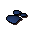
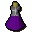

Unfinished potion
| Config name | lantadymevial |
| Item id | 2483 |
| Value | 68 gp |
| Weight | 2oz |
| Members | Yes |
| Tradeable | Yes |
| Stackable | No |
| Defined in | scripts/skill_herblore/configs/brewing/potions_unfinished.obj |
Unfinished potion
I need another ingredient to finish this Lantadyme potion.
How to make
| Skill | Level | XP | Ingredients | Tool | How | Where | Makes |
|---|---|---|---|---|---|---|---|
| Herblore | 69 | use on item | 1 members |
Used to make
| Skill | Level | XP | Ingredients | Tool | How | Where | Makes |
|---|---|---|---|---|---|---|---|
| Herblore | 69 | 157.5 |  Dragon scale dust | use on item |  Antifire potion(3)members | ||
| Herblore | 76 | 172.5 | use on item | members |
Referenced in scripts
scripts/skill_herblore/scripts/brewing/brew_potion.rs2